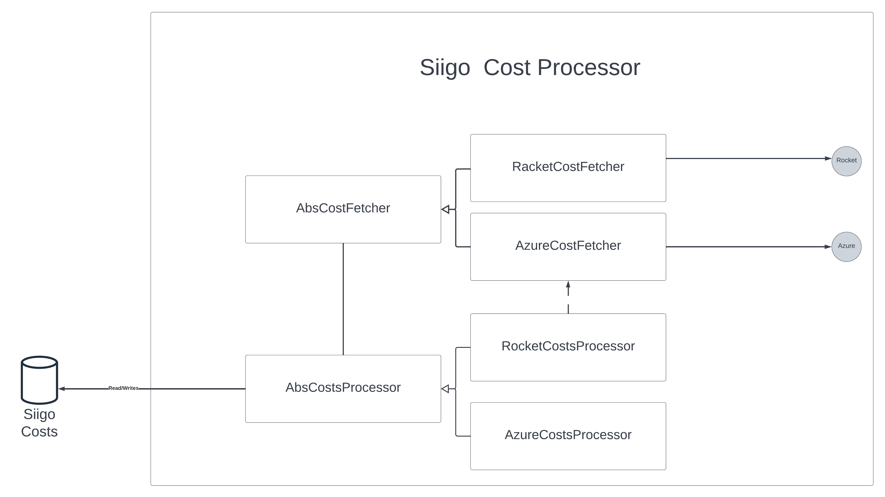
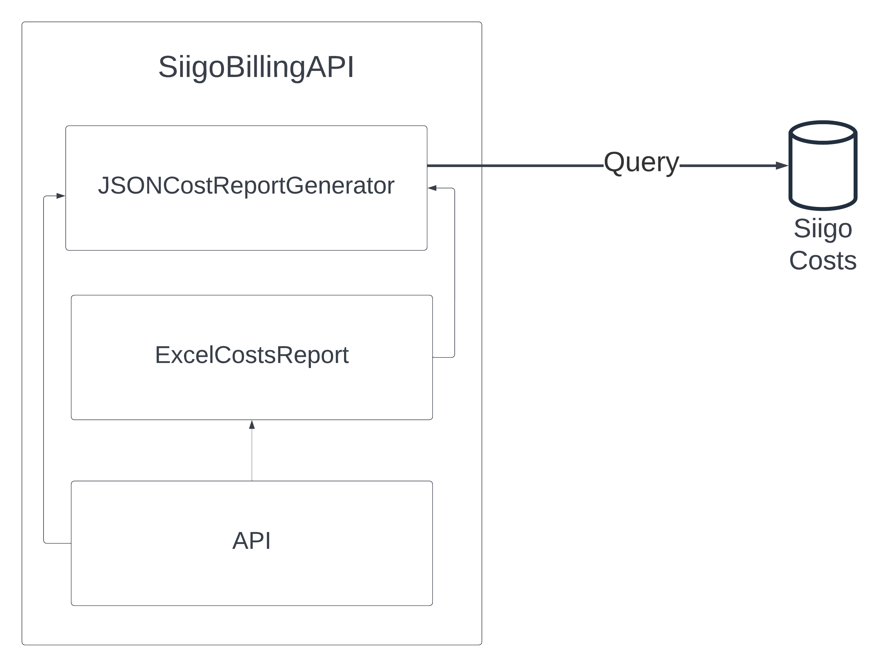

Siigo Costs¶
La aplicación tiene el objetivo de procesar y guardar los costos de infraestructura de Siigo SAS, de los diferentes clouds azure, aws, oracle, por medio de diferentes providers como rocket, azure costs management, aws cost, para poder generar métricas, indicadores, reportes, donde se puedan ejecutar análisis y de forma oportuna poder responder preguntas como:
- Donde y porque se incrementaron los costos este mes.
- Determinar que parte del incremento de costos es de nueva infra y de infra existente.
- Es el día 7, 15, etc. del mes y quiero saber cuales son los recursos que incrementaron sus costos lo que lleva del mes.
- Cuál será el costo de x recursos el mes que viene(Predicciones avanzadas).
- Cuál es el costo exacto de la nueva infraestructura desplegada este mes.
- Llevar un histórico de los costos también es algo muy valioso, ya que con esto podremos ver como cambian los costos de un recurso, grupo de recursos a lo largo del tiempo.
- Cuál es el descuento exacto que aplicó Rocket para cada tipo de recurso el mes que pasó.
Diagrama de arquitectura¶

La aplicación se compone de 3 componentes principales:
-
Siigo Resources Management: Tiene como objetivo bajar los recursos que están desplegados en los diferentes clouds(en este momento solo azure), ya que en los informes de costos se quiere obtener la información de cada recurso(tipo, región, sku, etc.) como también los tags(owner, tribu, product, solution).
-
Siigo Cost Processor: Tiene como objetivo bajar los costos de infraestructura de los recursos que están desplegados en los diferentes clouds, por medio de diferentes providers, como
Rocket,Azure Cost Management,AWS Costs, para luego procesarlos, agruparlos y relacionarlos a los recursos que están guardados en la base de datos. El objetivo es bajar los costos en intervalos establecidos teniendo en cuenta las restricciones de cada proveedor, por ejemplo: cada mes, cada semana, cada 15 días. -
Siigo Cost API: Es un API enfocada 100% a consultas sobre la info en la db, tiene como objetivo generar diferentes informes de costos, por suscripción, grupo de recursos, recursos, providers, etc, como también de recursos, en
excelojson. -
POWER BI: Esta tecnología externa nos ayudará a analizar la información de una forma más sencilla, con gráficos, consultas complejas etc, power bi tiene las opciones de obtener datos de un API o una db, en este caso MongoDB.
Siigo Resources Management¶

Por el momento este componente solo baja NUEVOS RECURSOS, más adelante podría ser capaz de determinar si un recurso ha sido ELIMINADO o ACTUALIZADO, y reflejarlo en la db.
- Id Factory: Este componente tiene el objetivo de generar id aleatorios para cada nuevo recurso o grupo de recursos o sub
-
Subscription Fetcher: Este componente tiene el objetivo de consultar las suscripciones de azure a través del api, procesarlas y retornarlas en formato json.
-
Resource Groups Fetcher: Este componente tiene el objetivo de consultar los recursos de azure a través del api, procesarlos y retornarlas en formato json.
-
Resources Fetcher: Este componente tiene el objetivo de consultar los recursos de azure a través del api, procesarlos y retornarlas en formato json.
-
Resources From Costs Fetcher: Este componente existe debido a que no es posible obtener todos los recursos que existieron en un mes con los tres componentes anteriores, ya que el API
Azure Resource Managementde azure solo retorna los que existen en el momento que se hace la petición. Este componente extrae todos los recursos y grupos de recursos no existentes en la db que vienen en la respuesta deAzure Cost Managementlos procesa y retorna en en formato json.
Cabe aclarar que usando lógica difusa se determina cual es elService Namepara cada recurso, ya que en la respuesta de costos para un mismo recurso normalmente vienen registros con diferentesServices Names(Un problema de ambigüedad). Este proceso se pudo validar en una PoC comparando los resultados con el portal deAzurey se encontró que funciona correctamente para un grupo mediano de datos. - Azure Fetcher Main: Este componente tiene el objetivo de llamar a los diferentes fetchers y posteriormente guardar la información en la base de datos.
Siigo Costs Processor¶

Este es un diseño simplificado de este módulo, este componente consulta en este momento información de costos directamente de Azure y de Rocket, los procesa y guarda en la base de datos.
-
Rocket Cost API: Este componente se comunica con el API de Rocket y consulta los costos por recurso de una
SuscripciónyPeriododeterminado Ej:2022-02,2022-03. Finalmente retorna los costos en formatoJSON.
Nota: Los costos solo se pueden consultar con períodos pasados, y no hay forma de consultar en otros periodos de tiempo. -
Azure Cost API: Este componente se comunica con el API de
Azure Cost Managementy consulta los costos por recurso en un intervalo de tiempo. Por ejemplo: desde2022-07-1hasta2022-07-15. Finalmente se retornan los costos en formatoJSON.
Notas:- En
Azure Cost Managementse pueden consultar los costos en cualquier intervalo de tiempo en el pasado, es decir puedo hacer consultas en intervalos como: [2022-07-1,2022-07-15]. También es posible consultar los costos del día inmediatamente anterior. - Por el momento solo se generan costos mensuales pero más adelante se generarán costos cada semana(Solo de Azure).
- En
- Cost Processor: Hay un
Cost Processorpor cada provider de costos, y tiene el objetivo de procesar los costos obtenidos del provider guardarlos en la base de datos. Todos losCost Processorguardan la información en la misma tabla de la db con el mismo formato. A modo de resumen el procesamiento es encontrar el recurso asociado y el costo total para cada recurso que aparezca en la respuesta del provider.
Ejemplo de Tabla de costos:
| Provider | Resource Id | Cost | Month | Year | Week |
|---|---|---|---|---|---|
| Azure | ObjectId(“62cc9c1218d23b62caf89d66”) | 1222.12121 | 04 | 2022 | 1 |
| Rocket | ObjectId(“62cc9c1218d23b62caf89d66”) | 1423.232 | 04 | 2022 | 2 |
| Rocket | ObjectId(“62cc9c1218d23b62caf89d66”) | 1011.2121 | 04 | 2022 | 2 |
- Azure Cost Processor:
Para procesar los costos deAzure Cost Managementse debe hacer una agrupación ya que los costos vienen segmentados, para calcular el costo de un solo recurso hay que agrupar al menos 6 registros sumando el costos. Para poder determinar qué registros son del mismo recurso se hace uso de expresiones regulares sobre elResource Idde cada registro en la respuesta de azure.
[
[
12.8898304,
"extensionappservice",
"microsoft.compute/virtualmachines",
"us central",
"subscriptions/b2fd9f8c-0ed5-4f6e-9c93-75ae90718afa/resourcegroups/rgvmtemprdp/providers/microsoft.compute/virtualmachines/alidostech-4",
"Bandwidth",
"USD"
],
[
0.016945401057600975,
"extensionappservice",
"microsoft.web/disks",
"us central",
"/subscriptions/b2fd9f8c-0ed5-4f6e-9c93-75ae90718afa/resourcegroups/rgvmtemprdp/providers/microsoft.compute/disks/alidostech-4_disk1_63e1110a0cbf410aaa7e374487b1e5d5",
"Disks",
"USD"
],
[
0.019006368,
"extensionappservice",
"microsoft.web/disks",
"us central",
"/subscriptions/b2fd9f8c-0ed5-4f6e-9c93-75ae90718afa/resourcegroups/rgvmtemprdp/providers/microsoft.compute/disks/alidostech-4_disk2_539ak292a91a374487b1d3992a",
"Disks",
"USD"
],
[
0.01767444,
"extensionappservice",
"microsoft.compute/virtualmachines",
"us central",
"/subscriptions/b2fd9f8c-0ed5-4f6e-9c93-75ae90718afa/resourcegroups/rgvmtemprdp/providers/microsoft.compute/virtualmachines/alidostech-4/extensions/dependencyagentwindows",
"Bandwidth",
"USD"
],
[
0.017733688,
"extensionappservice",
"microsoft.web/disks",
"us central",
"/subscriptions/b2fd9f8c-0ed5-4f6e-9c93-75ae90718afa/resourcegroups/rgvmtemprdp/providers/microsoft.compute/disks/alidostech-4_disk3_102kss229ja2ii2299s92as",
"Disks",
"USD"
]
]
-
Rocket Cost Processor:
Procesar los costos deRocketno es una tarea sencilla ya que rocket nos da los siguientes datos para identificar cada recurso:- Resource Name
- Resource Group:
extensionappservice,rgsearch, etc. - Subscription:
Qa,Prod, etc. - Service Name:
Storage,Virtual Machine,App Service Plan, etc.
Como se puede ver no nos da el
Resource Type, y sumado a eso hay un problema de ambigüedad enService Namecausado por azure, por ejemplo varios registros de la respuesta de rocket pueden tener diferentesService Namesy pertenecer al mismo recurso y no hay una forma de determinar cuál es elService Namereal para buscar el recurso en la db, pareciera que este se asigna casi de forma aleatoria. Por esta razón se utiliza la respuesta deAzure Cost Managementdel mismo mes, ya que aquí pasa lo mismo hay varios registros con diferentesService Namepara un mismo recurso con la diferencia de que esta leResource Id, así que se puede buscar el registro equivalente y extraer el Resource Id, para luego agrupar los costos porResource ID.
[
{
"resource": "aks-agentpool-33087089-vmss",
"resource_id": "aks-agentpool-33087089-vmss",
"resource_category": "Virtual Machines",
"parent_id": "mc_rgqaecuaks_qaecuakscluster_eastus2",
"total": 1164.6898642428978,
"last_total": 1187.6497824401101,
"forecast": 1164.6898642428978,
"forecast_percentage": 0,
"invoice_type": "1",
"estimate": 0,
"usage_issue_date": "0001-01-01T00:00:00Z"
},
{
"resource": "aks-agentpool-33087089-vmss",
"resource_id": "aks-agentpool-33087089-vmss",
"resource_category": "Bandwidth",
"parent_id": "mc_rgqaecuaks_qaecuakscluster_eastus2",
"total": 19.333820100715656,
"last_total": 16.988908387279764,
"forecast": 19.333820100715656,
"forecast_percentage": 0,
"invoice_type": "1",
"estimate": 0,
"usage_issue_date": "0001-01-01T00:00:00Z"
}
]
Siigo Costs API¶

En este momento solo hay un endpoint, este genera un reporte, en formato excel, hay que especificar la siguiente información:
- Periods: Son los periodos que se quieren ver en el reporte, ej:
2022-1,2022-2,2022-3. - Subscriptions: Son las suscripciones a las cuales se quiere generar costos ej :
b3fd9f1c-0ed5-4f6e-9a93-75ae90718vfa, se generará una hoja de excel para cada sub. - Providers: Se puede elegir si bajar los costos que se obtuvieron de
azureorocket, aún no se ha creado una funcionalidad para bajar de ambos al tiempo.
Al final el reporte generará dos hojas de cálculo por sub, uno con los costos por recurso, otro por grupo de recursos.
Ejemplo de una petición con curl.¶
curl -X 'POST' \
'https://apisiigoreports.azurewebsites.net/docs#/default/generate_costs_report_excel_report_post/excel_report' \
-H 'accept: application/json' \
-H 'Content-Type: application/json' \
-d '{
"periods": [
"1-2022","2-2022","3-2022","4-2022","5-2022"
],
"subscriptions": [
"b3fd****-****-****-****-*****8vfa", "7fef****-****-****-****-**089f788"
],
"providers": [
"rocket","azure"
],
"minimal_cost": -1
}'
Uso del API desde la Documentacion¶
La documentacion del API esta en el endpoint /docs
del api, desde ahi se puede llamar el api de una forma mas grafica.